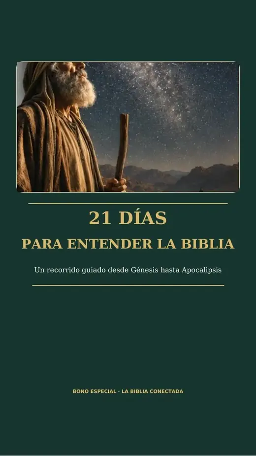
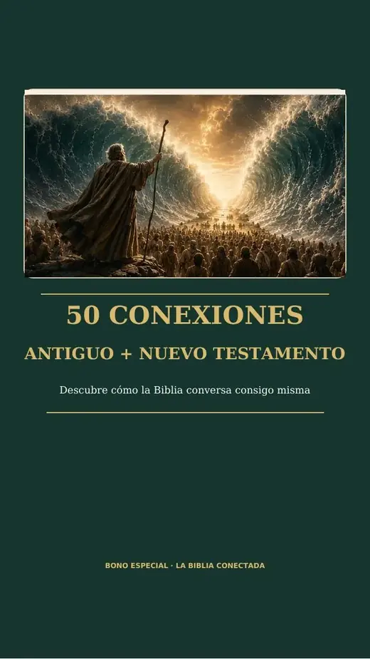
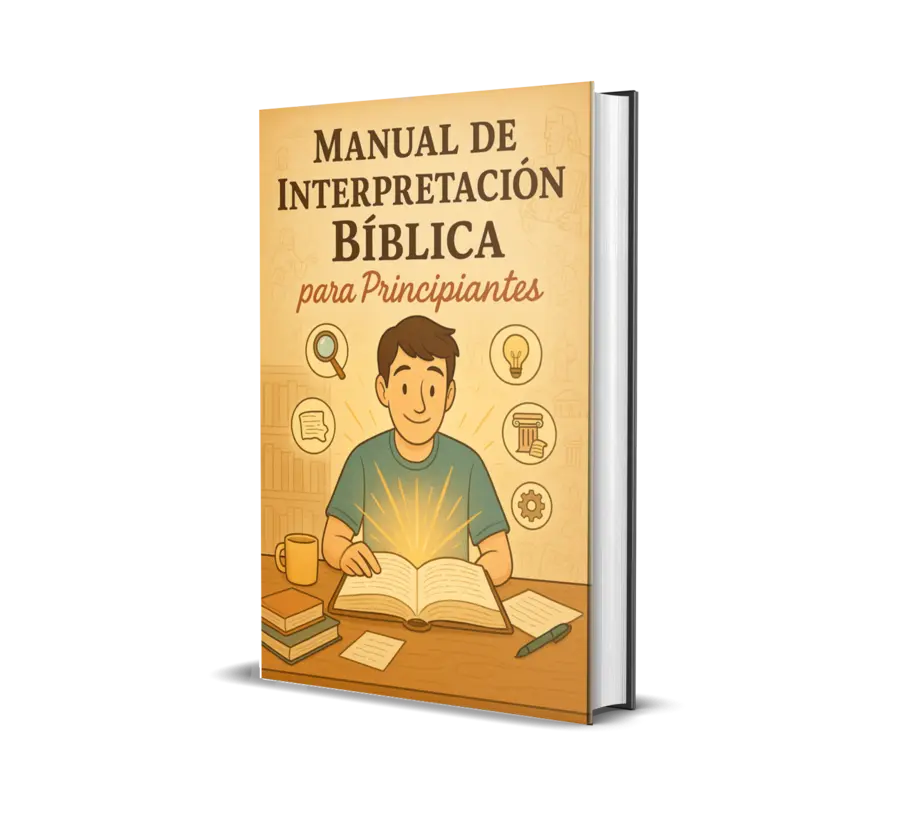

Sabes los nombres, pero no siempre recuerdas quién vino antes, quién convivió con quién o en qué momento ocurrió cada historia.
¿TE HA PASADO?
Lees la Biblia… pero a veces terminas el capítulo sin saber cómo encaja con lo demás.
No siempre falta disciplina. Muchas veces falta contexto: saber qué ocurrió antes, quiénes están presentes, en qué época estás y por qué ese libro importa dentro de la historia bíblica.
Entiendes un capítulo, pero cuesta visualizar cómo se relaciona con lo que ocurrió antes y con lo que vendrá después.
Interrumpes la lectura para investigar fechas, lugares, personajes o el propósito de un libro.
Cuando falta un mapa general, incluso pasajes conocidos pueden parecer aislados o difíciles de recordar.
La Biblia Conectada fue creada para darte ese mapa antes de profundizar.
En lugar de comenzar por detalles sueltos, primero te ubicas. Después entiendes el libro. Entonces puedes ver cómo esa parte se conecta con la gran historia bíblica.
EL MECANISMO
MAPA → LIBRO → CONEXIÓN
Una secuencia simple para reducir la confusión y darte una referencia clara antes de cada lectura.
1
MAPA
Ubica la época, los personajes principales y lo que ocurrió antes.
2
LIBRO
Comprende qué sucede, cuál es la idea central y qué debes observar durante la lectura.
3
CONEXIÓN
Relaciona acontecimientos, personajes y temas para dejar de ver cada relato como una pieza aislada.
Primero ubícate. Después profundiza.
Cuando sabes dónde estás en la historia, la lectura deja de parecer una colección de acontecimientos desconectados.
Cuando sabes dónde estás en la historia, la lectura deja de parecer una colección de acontecimientos desconectados.
UNA CLAVE QUE CAMBIA LA LECTURA
¿Sabías que el orden de los libros no funciona como una novela cronológica?
En el Antiguo Testamento conviven libros históricos, poéticos y proféticos. Algunos relatos y mensajes pertenecen a períodos que se superponen. Por eso conocer el panorama general ayuda a entender mejor dónde encaja lo que estás leyendo.
El contexto cambia la experiencia.
La guía está pensada para que, antes de entrar en los detalles, puedas responder preguntas básicas que normalmente generan confusión.
✓¿En qué momento de la historia estoy?
✓¿Quiénes son los personajes principales?
✓¿Qué ocurrió antes de este libro?
✓¿Qué papel cumple dentro del Antiguo Testamento?
DE CONFUSIÓN A CONTEXTO
Lo que cambia cuando dejas de estudiar cada libro de forma aislada
Antes
- Confundes la secuencia de acontecimientos.
- Olvidas quién es quién con facilidad.
- Lees un pasaje sin saber qué ocurrió antes.
- Necesitas buscar contexto constantemente.
- Terminas el capítulo sin visualizar el hilo general.
Con un mapa de referencia
- Ubicas el libro dentro de una etapa de la historia.
- Reconoces más rápido personajes y acontecimientos.
- Comprendes la idea central antes de profundizar.
- Relacionas partes que antes parecían separadas.
- Lees con una estructura mental más clara.
Una guía de apoyo, no un sustituto de la Biblia
- El volumen principal recorre los 39 libros del Antiguo Testamento.
- Fue pensado para acompañar tu lectura y darte contexto.
- No exige conocimientos bíblicos previos.
- Puedes consultarlo desde celular o tablet cuando necesites volver a ubicarte.
NO RECIBES SOLO UNA GUÍA
Recibes una biblioteca de apoyo para continuar estudiando.
El volumen principal te ayuda a ver el panorama del Antiguo Testamento. Los materiales complementarios amplían esa base con rutas de lectura, personajes, conexiones, interpretación y estudio en familia.
Todo organizado para una sola finalidad:
Que puedas abrir la Biblia con más contexto y depender menos de explicaciones dispersas cada vez que surge una duda.
Panorama del Antiguo Testamento
Ruta de estudio de 21 días
50 personajes bíblicos
50 conexiones entre Testamentos
Interpretación para principiantes
Historias para toda la familia

BONO 1
21 Días para Entender la Biblia
Una ruta diaria breve para crear constancia y avanzar sin preguntarte por dónde comenzar.
INCLUIDO SIN COSTO EXTRABONO 2
Quién es Quién: 50 Personajes Bíblicos
Consulta rápidamente quién fue cada personaje, dónde aparece y qué papel cumple en la narrativa.
INCLUIDO SIN COSTO EXTRA
BONO 3
50 Conexiones entre el Antiguo y el Nuevo Testamento
Identifica temas, promesas y relaciones que ayudan a visualizar la continuidad entre ambos Testamentos.
INCLUIDO SIN COSTO EXTRA
BONO 4
Manual de Interpretación Bíblica para Principiantes
Aprende una forma práctica de observar contexto, intención y estructura antes de sacar conclusiones.
INCLUIDO SIN COSTO EXTRABONO 5
Historias Bíblicas para Toda la Familia
Transforma la lectura en conversaciones y aprendizajes que puedes compartir en casa.
INCLUIDO SIN COSTO EXTRATU BIBLIOTECA DE APOYO BÍBLICO
Empieza por el panorama. Después profundiza con más claridad.
Hoy recibes La Biblia Conectada — Volumen I + 5 materiales complementarios en una sola compra digital.
La Biblia Conectada — Volumen IINCLUIDO
21 Días para Entender la BibliaBONO
Quién es Quién: 50 Personajes BíblicosBONO
50 Conexiones entre el Antiguo y el Nuevo TestamentoBONO
Manual de Interpretación Bíblica para PrincipiantesBONO
Historias Bíblicas para Toda la FamiliaBONO
Una colección digital de apoyo para consultar mientras lees, estudias o preparas una conversación sobre la Biblia.
Promoción por tiempo limitado · Últimos días
Precio habitual US$ 23,00
US$ 6,90Pago único · Ahorras US$ 16,10
SÍ, QUIERO LA BIBLIA CONECTADAEntrega digital por emailGarantía de 7 díasPago único
El formato es 100% digital, por eso podemos mantener un precio accesible sin costos de impresión ni envío físico.
GARANTÍA DE 7 DÍAS
Explora el material con un plazo para decidir
Después de la compra dispones de 7 días para solicitar el reembolso, conforme a las condiciones de la plataforma de pago. Así puedes acceder al contenido y evaluar si corresponde a lo presentado en esta página.
ANTES DE COMENZAR
Resolvemos las últimas dudas
¿Es para principiantes?
Sí. La estructura parte del panorama general y no exige conocimientos bíblicos previos.
¿La guía sustituye la Biblia?
No. Es un material de apoyo creado para acompañar tu lectura y ayudarte a comprender el contexto de los libros.
¿Qué parte de la Biblia cubre el volumen principal?
La Biblia Conectada — Volumen I recorre los 39 libros del Antiguo Testamento. Los bonos añaden temas complementarios.
¿Qué recibo exactamente?
Recibes el Volumen I de La Biblia Conectada y los cinco bonos mostrados en esta página.
¿Cómo recibo el material?
Después de la confirmación del pago recibirás por email las instrucciones de acceso al contenido digital.
¿Puedo usarlo desde el celular?
Sí. El material digital puede ser consultado desde celular y tablet.
¿Es una suscripción?
No. El valor indicado es de US$ 6,90 en un único pago.
¿Cómo funciona la garantía?
Dispones de 7 días para solicitar el reembolso conforme a las condiciones de la plataforma de compra.